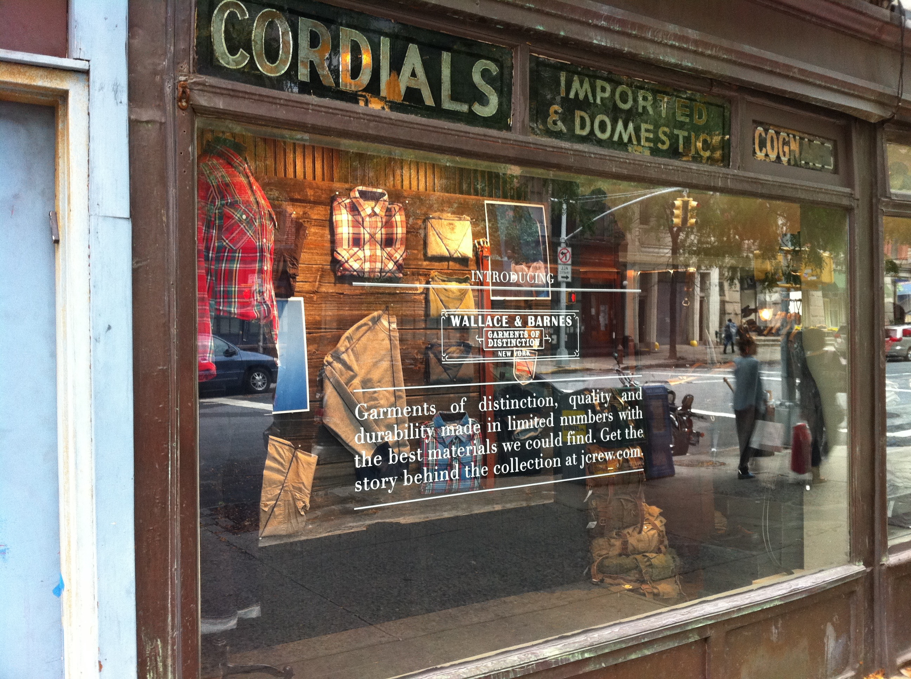

What’s your type?
You know when you discover new something that you are really into? Maybe a really good ice cream flavor, a quaint little coffee shop around the corner from your apartment, or a new yoga studio…well for me, my new thing is typography...no, not topography, I’m not in love with maps, but rather the craft of arranging type, how words are presented, and how they make me feel. Sure, maybe it is a little dorky (or a lot dorky), but I find myself reading typography books on my daily train rides and overanalyzing brunch menu designs.
Recently on a trip to New York City I found myself standing along crowded streets with a large Nikon camera hanging from my neck, accepting my obvious tourist identity. Between pre-planned tourist attractions I was able to wander along some side streets. I fell in love with delicate storefronts and I took pictures of them. I tried to make predictions about the interior of small stores simply based on the type of the font in the logo mixed with the storefront views.
“95% of the information on the web is written language. It is only logical to say that a web designer should get good training in the main discipline of shaping written information,”.
Typography is much more than just picking a typeface, but rather selecting point size, line length, line-spacing, letter-spacing, and adjusting space between words.
I believe that typography is an undermined aspect of branding. Words can be extremely powerful, and the format that they are presented is also extremely important.
“Typography seeks to create a greater meaning by thoughtful and deliberate selection font, size, color, layout, alignment, and other factors that affect the design of type on a page.”
Typography not only enhances a brand, but it must be unified in order to successfully communicate its meaning to the target audience. Fonts and typography are not only important to invite people into stores and enhance that experience, but they are extremely valuable to the virtual experience as well. Not only is it important to create fresh, relevant, and authentic content on a landing page, but to have a format that not only matches the brand but enhances it.
What factors help you decide to invest in a brand?
To me I think of trust. It is already hard enough for a company to gain attention of consumers among competitors, nevertheless to maintain trust. Messages should be consistent across platforms.

As my tourist-self saw an independently owned bakery with a delicate vintage font from across the street, I would imagine that the entrepreneur who started the business would hope that would draw me into the store.
With the increase of e-commerce, websites must also serve similar purposes. Just as the storefront logo would hope to draw hungry cup-caking eaters, a website landing page must serve a similar purpose in a digital space.After we type something in a search engine, it is then that we must pick what site we would like to pursue. On the search engine response page each company looks the same, it isn’t until a consumer actually enters the website where they truly understand the brand experience. When someone opens the landing page they enter a new world of the brand where they can engage with the brand.
Conversions, click-through-rates, and clicks on their sites can measure the effectiveness of fonts that match the character and message of the brand. Reduced bounce rates, improved time on pages, and better conversion rates may follow once the proper typographic fonts are used. This brand must be consistent with the in-store experience so that the consumer is greeted with pure authenticity. Design a dynamic experience using typography that contributes to the overall design and communication of the brand personality.
Just remember, As Robert Bringhurst wrote, “Typography exists to honor content.”